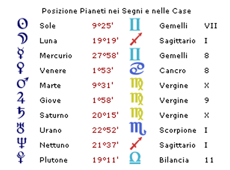
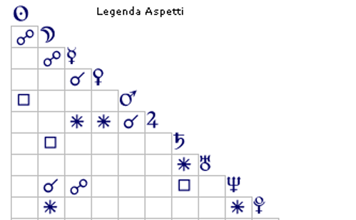

Casi Astropsicologici
Ombre e nebbia — Il peso delle figure genitoriali in un tema natale
I dati personali sono stati modificati per tutelare la privacy


Ombre e nebbia — Il peso delle figure genitoriali in un tema natale
La prima osservazione che emerge dal tema natale è la collocazione della quasi totalità dei pianeti sopra l'orizzonte, con soli tre di essi al di sotto. In astrologia, questo corrisponde a una persona orientata verso il mondo esterno piuttosto che verso il proprio mondo interiore e familiare: qualcuno che ha cercato altrove — nelle relazioni, nella vita sociale, nel lavoro — ciò che il contesto d'origine non è stato in grado di offrire. Questa tendenza non è una scelta consapevole, ma una strategia di sopravvivenza maturata fin dall'infanzia.
Il nucleo più problematico del vissuto di questa persona riguarda il rapporto con la madre. La Luna — simbolo della madre e del nutrimento primario — è congiunta a Nettuno in seconda casa e riceve l'opposizione di Mercurio dall'ottava. È una configurazione che nella sua concretezza descrive una madre vissuta come sfuggente, incomprensibile, impossibile da afferrare. I segnali che venivano da lei non erano chiari: il bambino non riusciva a capire quando sarebbe stata disponibile e quando no, quando avrebbe risposto e quando avrebbe ignorato.
Questo tipo di esperienza genera quello che la psicologia dell'attaccamento chiama uno stile ansioso-ambivalente: il bambino non riesce a fare affidamento sul caregiver, oscilla tra avvicinarsi e tirarsi indietro, e impara precocemente che le relazioni sono luoghi di incertezza. Il fatto che l'aspetto coinvolga l'asse della comunicazione (Sagittario-Gemelli) precisa ulteriormente la natura del problema: non si trattava di una madre assente fisicamente, ma di una madre i cui messaggi erano ambigui, pieni di sottintesi, di cose dette a metà. Un ambiente in cui il bambino impara a leggere tra le righe senza mai trovare una risposta certa.
La quadratura Luna-Saturno aggiunge un ulteriore strato di difficoltà: la madre non riusciva a offrire quella protezione calda e avvolgente di cui ogni bambino ha bisogno. Non si è trattato necessariamente di maltrattamento, ma di una freddezza, di una distanza emotiva, di un abbraccio che non c'era o che arrivava in modo discontinuo. Il bambino non si è sentito al sicuro, non si è sentito tenuto.
Il problema non riguardava solo la madre, ma l'intero sistema famiglia. La cuspide della quarta casa — quella della famiglia di origine — si trova nel segno dei Pesci, il cui governatore Nettuno partecipa alla configurazione descritta sopra. L'immagine che ne emerge è quella di un ambiente domestico senza confini chiari, senza regole stabili, in cui regnava una sorta di nebbia emotiva: nessuno diceva mai davvero quello che pensava, le verità erano sempre parziali, le emozioni circolavano in forma velata e indiretta.
Mercurio in ottava casa, leso, conferma questa lettura e la precisa: la comunicazione in famiglia era pesante, carica di non-detto, di segreti, di cose che si sapevano ma non si nominavano. Un clima del genere genera nel bambino un senso cronico di tensione e inquietudine: percepisce che qualcosa non va, ma non riesce a capire cosa. Impara a diffidare delle parole, a cercare i significati nascosti, a non fidarsi di ciò che viene detto esplicitamente.
Questo tipo di ambiente familiare rende molto difficile costruire un senso stabile di sé. Winnicott diceva che il bambino esiste prima nella mente della madre: se quella mente è opaca, instabile, o distratta, il bambino fatica a trovare se stesso in quello specchio. Il risultato è spesso una identità fragile, che dipende eccessivamente dal riconoscimento esterno per sentirsi reale e presente.
La figura del padre si colora di toni molto diversi rispetto alla madre, ma non meno problematici. Il Sole in Gemelli in settima casa è al quadrato di Marte in Vergine in decima casa: un padre che si pone dall'alto, che impone il proprio punto di vista, che usa le parole come strumento di potere e di svalutazione. Non è una figura distante o assente come la madre, ma al contrario molto presente — forse troppo — con la propria autorità e il proprio giudizio.
La cuspide della quinta casa in Ariete, governata proprio da quel Marte in decima, suggerisce che il sistema familiare aveva una struttura fortemente patriarcale: c'era una gerarchia chiara, e la figlia occupava in essa un posto subalterno. Le sue opinioni non contavano, le sue emozioni venivano sminuite o ignorate, il suo valore era costantemente messo in discussione.
Il soggetto ha risposto a questa svalutazione con una svalutazione speculare: non ha potuto prendere il padre come modello positivo, perché anche lei, a sua volta, lo ha svalutato. Marte in Vergine è un dettaglio rivelatore in questo senso: il padre viene percepito come un inferiore, qualcuno di cui non ci si può fidare né che si può stimare davvero, nonostante la sua posizione dominante. Questo tipo di relazione — in cui ciascuno svaluta l'altro — è psicologicamente esaustiva e non offre nulla di nutriente.
Uno degli sviluppi possibili di questo quadro riguarda il rapporto con il cibo e con il corpo. L'opposizione si forma sull'asse seconda-ottava casa — quella del nutrimento e quella dell'eliminazione — e la sesta casa, legata alla malattia, è occupata dal Toro, cosignificante della seconda. L'immagine è quella di qualcuno in cui la nutrizione — fisica e simbolica — è diventata un terreno di conflitto.
Quando un bambino non si sente visto né curato, il corpo può diventare il luogo in cui si esprime ciò che non riesce a prendere forma nelle parole. Il cibo smette di essere solo nutrimento e diventa un linguaggio: un modo per controllare qualcosa quando tutto sembra fuori controllo, un modo per punirsi o per esistere, per affermare la propria presenza o per dissolversi. Giove in Vergine aggiunge a questo quadro una tendenza al controllo nell'alimentarsi, probabilmente vissuta come forma di autodisciplina o di ordine in risposta al caos familiare.
Il pensiero di fondo che potrebbe animare queste dinamiche è: "Se nessuno mi guarda e nessuno si prende cura di me, significa che non esisto." È la logica di chi ha imparato che la propria esistenza dipende dall'essere notati — e che, quando non lo si è, l'unico modo per tornare a esistere è intervenire sul corpo, l'unica cosa davvero propria.
Un vissuto così pesante avrebbe potuto produrre una persona fragile e dipendente. Ciò che sorprende nel tema natale è invece la presenza di risorse molto solide, probabilmente forgiate proprio dalla sofferenza.
Autonomia e capacità di giudizio
Urano sulla cuspide della prima casa in Scorpione, al sestile di Saturno in Vergine in decima casa, è una configurazione di grande forza. Indica una persona capace di prendere decisioni in modo autonomo e lucido, che non si lascia schiacciare dall'autorità altrui, che ha sviluppato una vera indipendenza di pensiero. Questa capacità non è arroganza, ma il frutto di un lungo lavoro interiore: imparare a fidarsi del proprio giudizio quando gli adulti di riferimento erano inaffidabili.
Essendo Urano il governatore della terza casa — quella dell'adolescenza — il distacco dalla famiglia è probabilmente cominciato presto, già in quegli anni. Non necessariamente un distacco fisico, ma mentale: una presa di distanza interiore, una progressiva autonomia nel modo di vedere le cose.
Venere congiunta a Mercurio in ottava casa descrive qualcuno che non si abbandona ai sentimenti senza prima averli esaminati. Razionalizza, riflette, scava in profondità. Questo può essere un limite — a volte le emozioni chiedono di essere vissute, non analizzate — ma è anche una risorsa preziosa: significa che questa persona è capace di insight, di comprensione autentica del proprio mondo interno.
Il sestile che questa congiunzione riceve da Giove in nona casa aggiunge qualcosa di importante: il bisogno e la capacità di esprimersi, di dare forma alle proprie emozioni attraverso le parole. Il dialogo è per lei uno strumento di elaborazione, non solo di comunicazione. Questo la rende particolarmente adatta a un percorso terapeutico.
Una delle indicazioni più interessanti riguarda il modo in cui le relazioni con gli altri agiscono su di lei. Plutone in Bilancia in undicesima casa al sestile della congiunzione Luna-Nettuno in seconda suggerisce che il contatto con gli altri — non solo le relazioni intime, ma anche quelle più allargate — ha per lei un effetto trasformativo. La aiuta a ritrovare il proprio centro, a recuperare il senso del proprio valore.
La settima casa in Toro offre infine un'indicazione precisa sul tipo di relazione amorosa di cui ha bisogno: qualcuno di stabile, affidabile, paziente. Una presenza concreta e continua che possa offrire quella forma e quei confini che la famiglia non ha mai dato. Il Toro è il segno opposto allo Scorpione ed è molto concreto e chiaro rispetto al caos dei Pesci che ha caratterizzato la sua infanzia: è solidità, è terra, è la certezza che domani si sarà ancora lì.
Ciò che emerge da questa analisi è il ritratto di una persona formata da un'infanzia difficile, in cui i due principali punti di riferimento — madre e padre — non hanno saputo, ciascuno a modo suo, offrire nutrimento, protezione e riconoscimento. Ne è derivato un senso di sé incerto, una difficoltà a fidarsi delle relazioni, e forse un conflitto con il proprio corpo come residuo di quella fame affettiva originaria.
E tuttavia, il tema natale restituisce anche il profilo di qualcuno che ha trasformato quella sofferenza in forza. La capacità di autonomia, di riflessione, di scelta lucida sono risorse reali, non illusorie. Questa persona è, in un senso profondo, già padrona di sé stessa — anche se probabilmente ancora non lo sa del tutto.
Il percorso che le si offre non è quello di costruire da zero una identità, ma di riconoscere e abitare più pienamente quella che già c'è.